Boss attack overhaul · boss 2 of 6 · for your approval, not in Studio yet
The Senior Partner: Briefcase Swing
His swing rebuilt on the Megalodon benchmark, every beat keyed in Blender to the server's own timing. With two or more players on Briefcase Bay he also throws a Paper Storm: bundles of case files lobbed onto the other players.
Cinematic cut: front three-quarter on the glasses, stomp, raise and paper swirl, side-on for the sweep and the strike, then the other side for the yank and tidy-up. Real speed.
Windup 1.2 s
Attack 0.45 s
Recover 0.6 s
01.21.652.25 s
Widths are the server's real seconds (BossService "Cone" + Config). Everyone in the 45-stud, 110° fan is hit on the attack's first frame, so the swing starts in the windup's last 0.14 s and the case hits the ground 0.05 s into the attack. Before, the slam landed about 0.17 s after the hit.
Storyboard
A · Anticipation windup 0 – 1.2 s
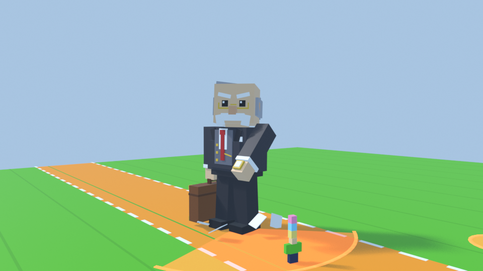
0.07 s Notice: chin up and brows up. He turns slowly, and his head leads the turn.
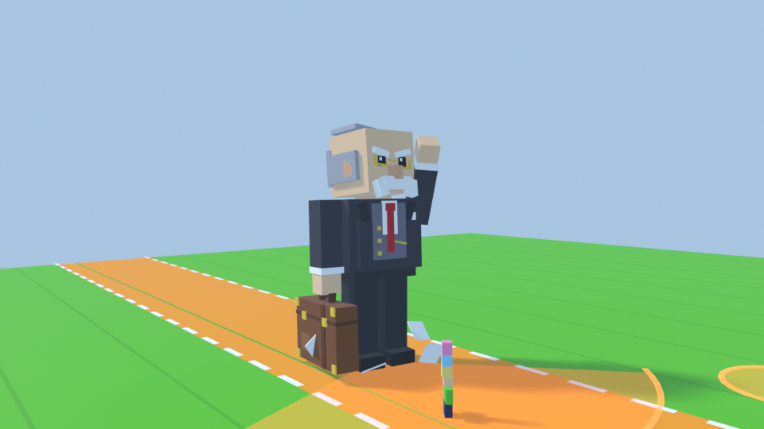
0.26 s Glasses: his left hand pushes them up his nose, they tilt, and his brows drop into a scowl. A small harrumph.
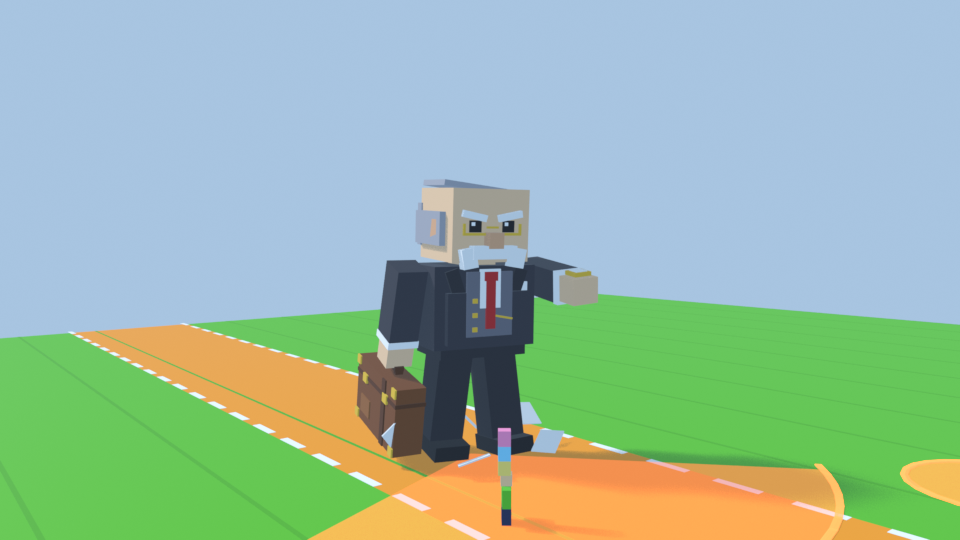
0.43 s Stance: left foot forward, the right foot stomps back with a puff of dust.
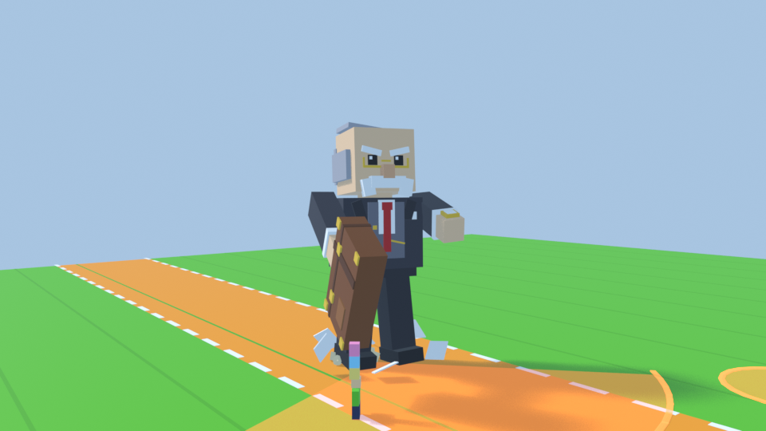
0.58 s Dip: the case swings back first, the anticipation before it goes up.
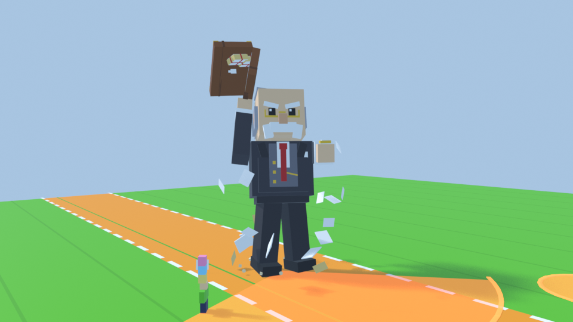
0.80 s Papers swirl: at the top the lid bursts open, files spray out and sheets whirl around him.
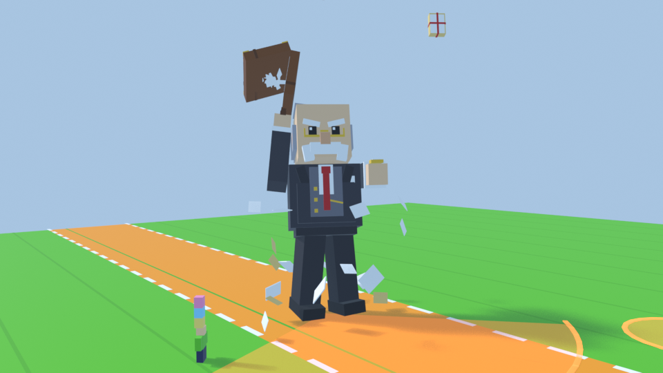
0.97 s Hold: “Objection!” He points at his target, trembling, the case cocked behind his head.
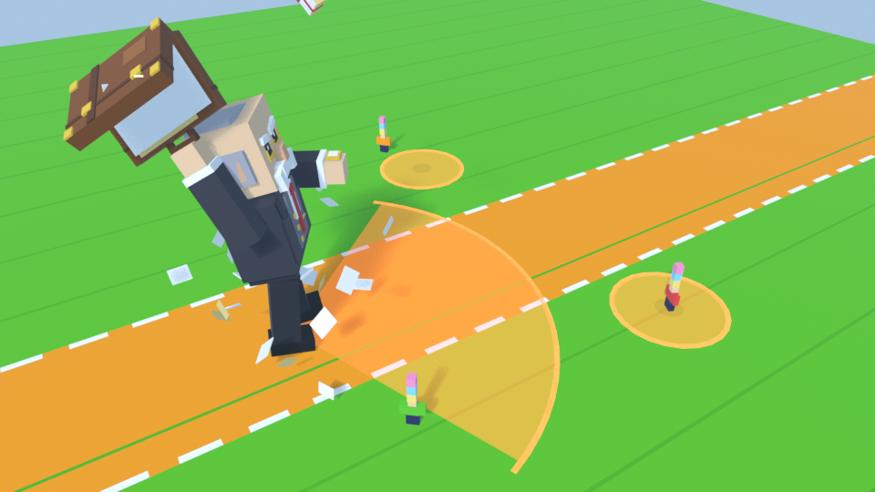
0.90 s From a player's height: the 45-stud fan plus a 10-stud disc round each other player. All show from the windup's first frame.
B · Attack 0.45 s, the hit is its first frame
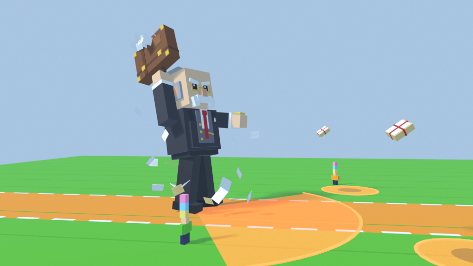
windup 1.12 s Downswing: one last cock back, then the sweep accelerates and his torso untwists.
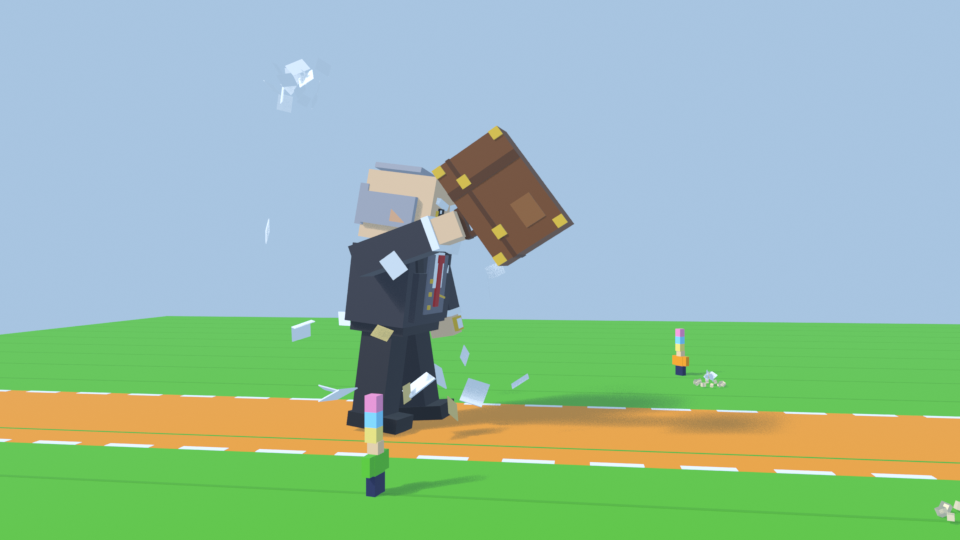
+0.05 s Strike: the case's corner hits the ground. He squashes to 0.84 on the impact.
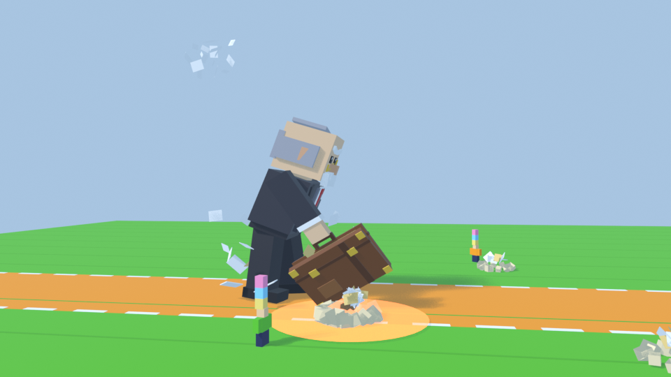
+0.12 s Impact: a ring in his colour, dust, dirt clods and a fan of paperwork thrown through the cone. His moustache flaps up and his glasses jump down his nose.
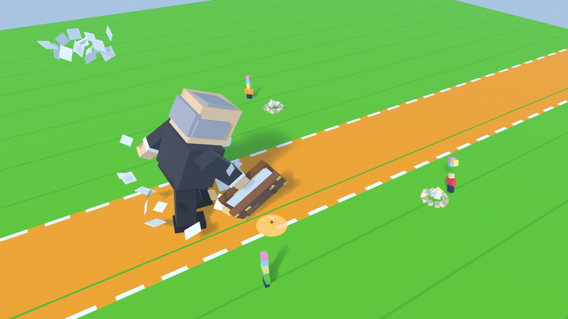
+0.06 s Paper Storm: the bundles land on the disc centres as the attack starts, the same moment the server hits.
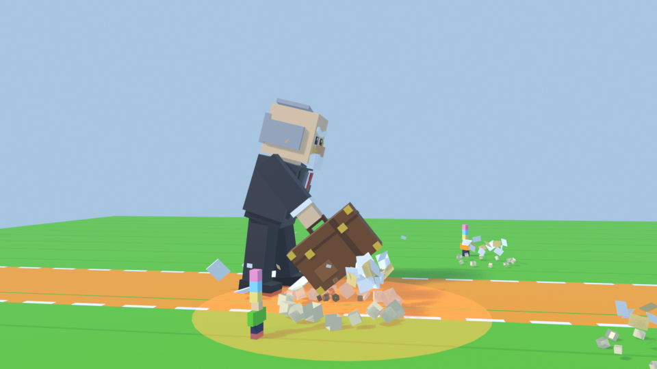
+0.36 s Stuck: a first tug that doesn't free it.
D · Recovery recover 0.6 s
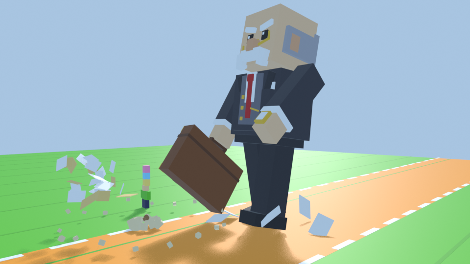
0.14 s Yank: a heave back pops the case free, and it swings on its handle like a pendulum.
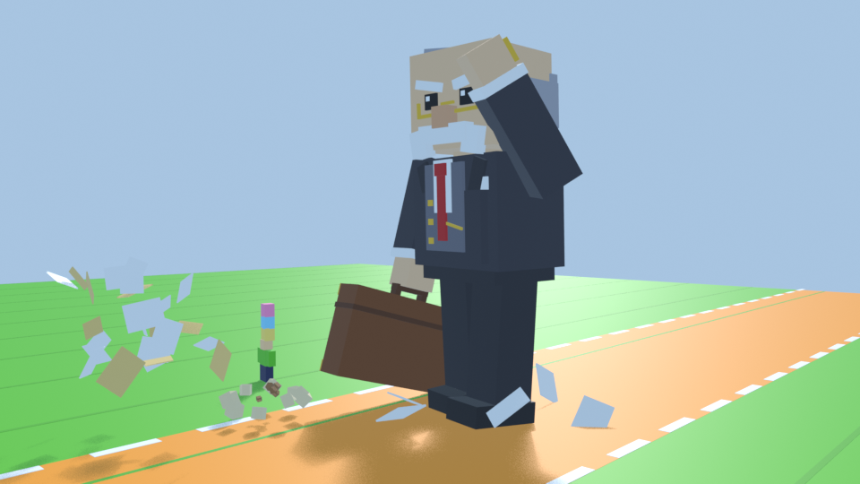
0.33 s Tidy up: he pushes his glasses straight again.
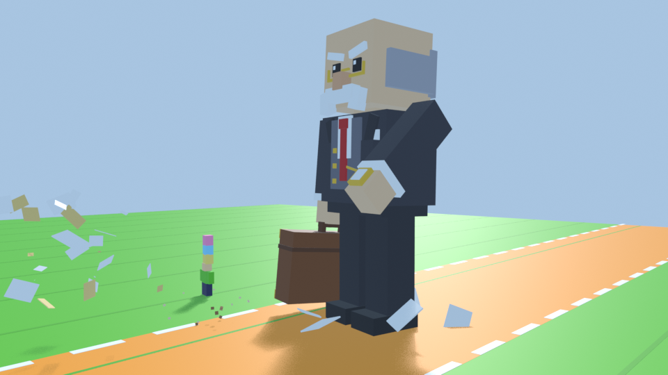
0.50 s Harrumph: a last chest puff, then back to his stroll.
Paper Storm (2+ players)
With one player on the island nothing changes. With two or more, as the windup begins he picks up to two other players within 90 studs and marks a 10-stud disc where each one stands. When the lid bursts open at the top of the swing, a bundle of case files arcs out at each disc with its shadow growing underneath, and lands on the centre exactly as the swing hits. Walking out of a disc takes 0.31 s at base speed, so only someone who stands still is caught. A hit works like any other hit: eggs out, ragdoll, then safe for a few seconds.
The server side is generic now: a crowd add-on can be a Lane (the Megalodon's sand sharks) or a Disc (this), for any attack kind. The other four bosses' add-ons stay proposals until their own passes.
What changed
Model: 7 to 12 moving parts with the same blocks in the same places: brows, glasses, moustache, the case on its handle, and the case lid on a hinge with the files inside.
Animation: three Blender clips (windup, attack, recover) with squash and stretch, a slower turn led by his head, and secondary motion on the case, lid, moustache and glasses.
Effects: stomp dust, the paper swirl, a clasp gleam, the strike's rings, dust, clods and paperwork, the yank's puff, and the flying bundles. All use textures the game already has, so nothing new needs uploading.
Sound: a glasses click, stomp, lift whoosh, lid pop, papers, the big swing whoosh, the gavel knock with a ground crack, and a yank crack. All come from the game's licensed set.
Gameplay: no change for one player. The Paper Storm only adds danger when 2+ players are there.
Checked
Timing: clip lengths match Config (windup 1.2) and BossService (attack 0.45, recover 0.6). The automated check now covers Cone bosses and the turn too.
Clipping: every block was tested against every other part, every frame. The worst left is 0.27 studs on a 38-stud boss. The fixes covered the glasses push cutting through his cheek, the turn swinging the case into his legs, a toe in the ground, the moustache flapping into his face, and the case dipping into the ground on the backswing.
Hidden overlaps: when he bends over, the tops of his legs go up inside his jacket (0.39 studs at most). Nothing shows through.
Megalodon: its model and clips export byte-identical after the tool was made generic.
Repo checks: all Luau compiles, 42 config checks pass and the sim tests pass.
Not tested yet: a live playtest in Studio. That happens after approval.
For your call
Approve the Briefcase Swing as it is, or send notes (beat, pose or timing, using the storyboard times).
Paper Storm: 10-stud discs, up to two other players, within 90 studs, landing with the swing.
After approval: rebuild the boss models in Studio, add the new clips, merge the three scripts and Config, then playtest with 1 and 3 players.